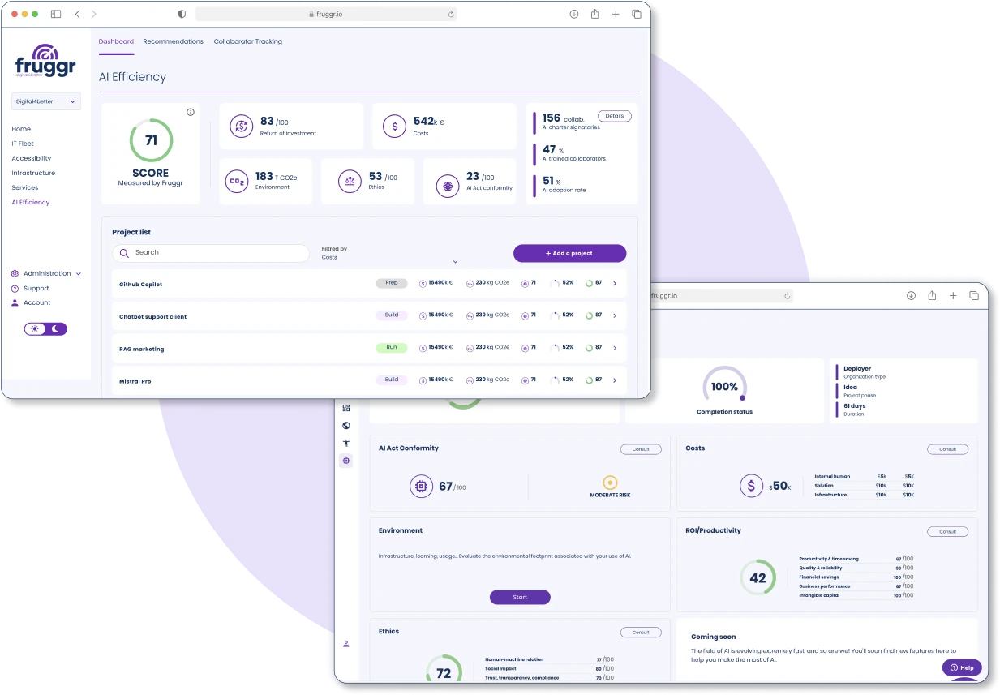
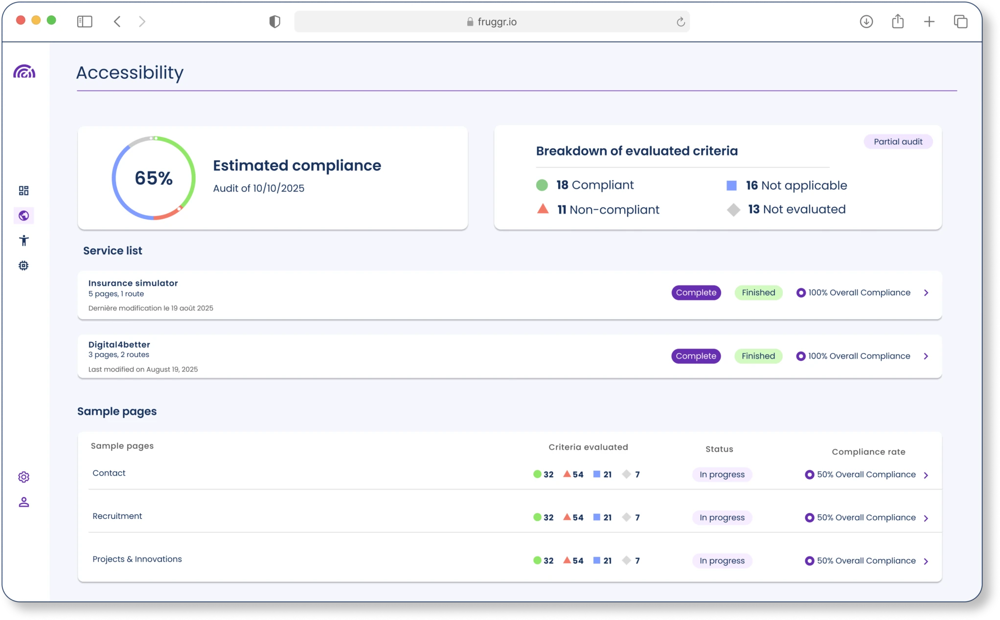

Work / Fruggr
Fruggr
Fruggr is a European SaaS suite that measures and steers the ESG impact of digital services, through modules for AI, accessibility, ecodesign, infrastructure, IT fleet and the digital workplace. I work on three of them: AI Governance, Accessibility and Ecodesign.
- Company
- Digital4Better
- Modules
- AI Governance, Accessibility, Ecodesign
- Role
- Full-stack developer
- Years
- 2025–now
- Stack
- TypeScript, React, NestJS, tRPC, GraphQL, MongoDB, Azure, Docker, OpenTelemetry, MCP
- Visuals
- Published by Fruggr, demo data
- Live
- fruggr.io

AI Governance
An organisation inventories its AI systems, assesses their EU AI Act compliance and its own AI maturity, runs an action plan, and measures its real use of AI. I laid the foundations of the production application and led its build; it is live with its first paying customers.
- The production foundations: a typed API in NestJS and tRPC, authentication shared with the rest of the suite, and every piece of data isolated per organisation.
- The first business screens: the AI system registry, the maturity assessments and the action plan.
- The MCP server, with OAuth 2.1, so AI assistants can work with the platform.
- What makes AI usage telemetry useful: rules that tie each use to its AI system with a live preview, and production telemetry replayed on test environments so every screen holds the volume.
- An access policy required on every entry point of the API, with tests that prove the isolation between organisations.
Accessibility
The module audits websites against the French accessibility standard, RGAA, from a Chrome extension or a scanner, by hand or with the help of AI.
- The accessibility scanner, taken to production in a container: audits behind a login, hardened images, and a client token that never leaves for the audited site.
- The automatic mode of the AI-assisted audit in the extension, which runs a whole audit on its own, and the extension's releases.

Ecodesign
The module analyses the footprint of websites and mobile apps, and their compliance with ecodesign standards.
- The ecodesign compliance forms, the French RGESN among them, with an engine that pre-fills criteria from each analysis.
Across the suite
- Personal access tokens and the authentication chain that let clients' CI/CD call Fruggr, and silent single sign-on over SAML.
- Administrator of the product's Azure infrastructure, in charge of its DevOps work through to production.
- Co-author of the project's technical constitution, followed by the team and by AI agents alike, including the rule that no agent merges without a human's approval.
- Rotating customer support duty, with investigations started by an AI connected to the product's data.